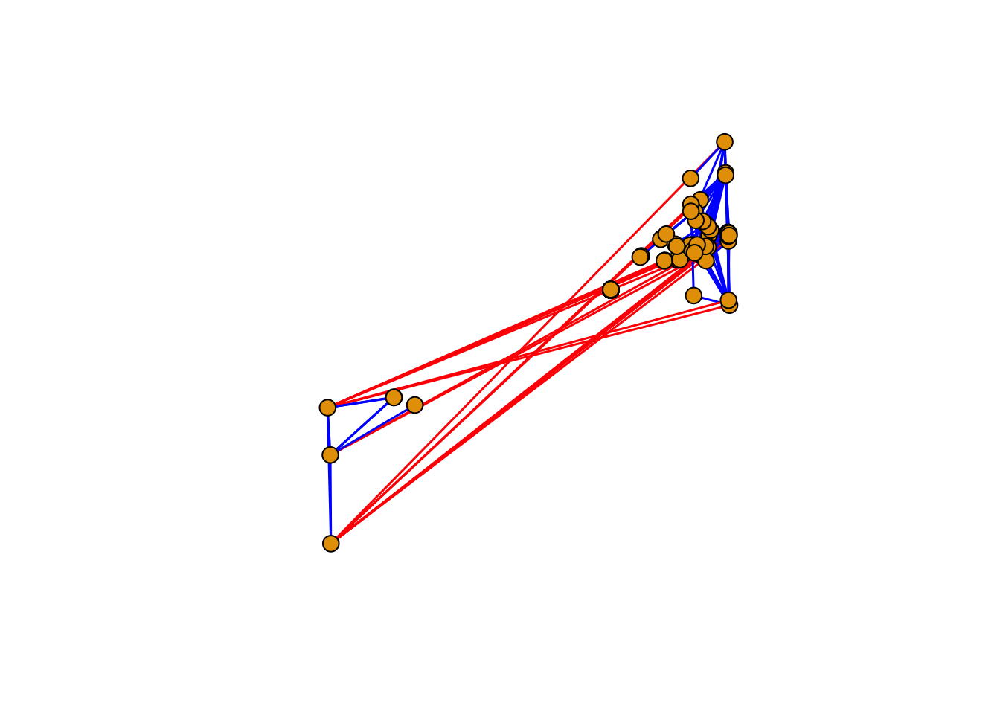
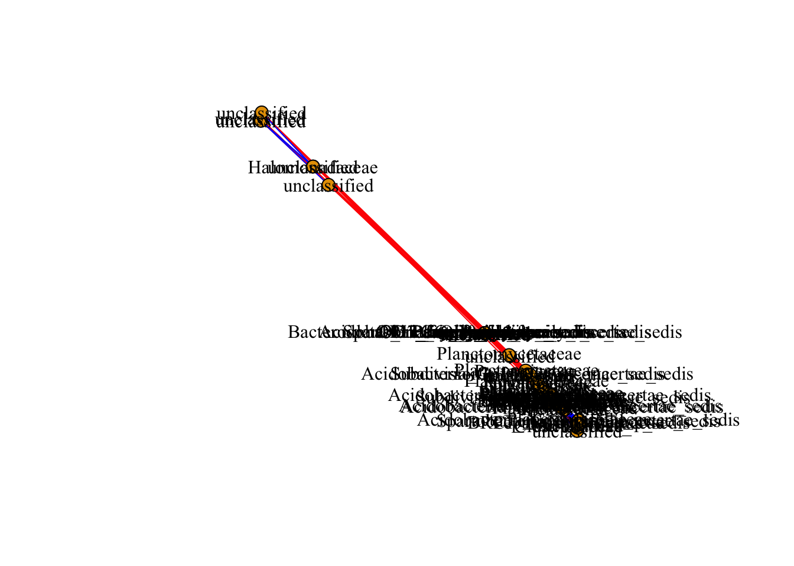

July 28, 2018
Metagenomics is the study of microbial communities. With the advent of high-throughput sequencing (HTS) platform, it is possible to characterize and study microbes from the environmental samples directly. There is no need to culture organisms for its identification. Genetic or genomic information is used to characterize the diversity of organism. Usually, the conserved genes such as small ribosomal subunit 18S for nematodes, the internal trasncribed spacer (ITS) for fungi, or 16S rRNA for bacteria, or viral nucleic acids are commonly sequenced.
Sampling depends on the organism of study, it could be leaves, roots, soil, etc. Isolation of nucleic acid for HTS is crucial, high abundance and good quality is required. The vast options of sequencing methods, Illumina sequencing, produces the largest number of reads with the highest quality among the different technologies. Usually, the number of reads yielded from HTS are large, bioinformatic skills and powerful computers are usually helpful. There are many bioinformatic pipeline available online, or servers that could help you analyze your data; however, this workshop is designed for the analysis of networks based on the metagenomic data.
A good experimental design is important in order to get a better understanding and confidence of your model system.
Install the following packages (if you haven’t), and load the following libraries.
# install.packages("igraph") # uncomment this line in order to install this package
library(igraph)
# install.packages("Hmisc") # uncomment this line in order to install this package
library(Hmisc)
# install.packages("Matrix") # uncomment this line in order to install this package
library(Matrix) Loading the data, we are going to load two tables [comma separated value or csv format], using the command read.csv(), we either could call the file following the PATH or use the command file.choose(), select the files otudata.csv and otu_taxonomy.csv.
# Load the data with the OTU table: otudata.csv
otu.table<-read.csv(file.choose(), header=T, row.names = 1)
# Read taxonomy file associated with OTU table into new object: otu_taxonomy.csv
tax<-read.csv(file.choose(),header=T, row.names = 1)Using the command dim() we can check the dimensions of the data.frame.
Columns are samples, and rows are operative taxonomic units [OTUs].
dim(otu.table)## [1] 112 3052Filtering low abundant OTUs, maintaining OTUs with more than 10 read counts
otu.table.filter <- otu.table[ ,colSums(otu.table) >= 10]We can compare the initial number of OTUs, and after discarding low read count.
print(c(ncol(otu.table),"versus",ncol(otu.table.filter)))## [1] "3052" "versus" "2572"Now we have loaded the required files, we will be using those OTU count data, and taxonomy file to build a microbiome network. In the microbiome network, a node represents taxon, and links exist between a pair of nodes if their sequence frequency are significantly correlated. Multiple staticstical approaces such as pearson, spearman correlation are commmonly used to define the pairwise association; however, other methods (such as SparCC, SpiecEasi) for microbiome data are also available. Given the limitation of computational time and resource, we will be using spearman correlation here.
Calculating the “Spearman” correlation coefficient between OTUs using the function rcorr(). A list will be created from, with three elements, r for correlations, n for the number of observations and P for the p-values. [If you are curious type ?rcorr() to explore the coefficient options].
otu.cor <- rcorr(as.matrix(otu.table.filter), type="spearman")To obtain the p-value information from the list, use otu.cor$P, using the function forceSymmetric() to assign self-correlation as NA.
otu.pval <- forceSymmetric(otu.cor$P) # Self-correlation as NASelect only the taxa for the filtered OTUs by using rownames of otu.pval
sel.tax <- tax[rownames(otu.pval),,drop=FALSE]Sanity check
all.equal(rownames(sel.tax), rownames(otu.pval))## [1] TRUEFilter the association based on p-values and level of correlations
p.yes <- otu.pval<0.05Select the r values for the filter probality of < 0.5.
r.val = otu.cor$r # select all the correlation values
p.yes.r <- r.val*p.yes # only select correlation values based on p-value criterion Select OTUs by level of correlation
p.yes.r <- abs(p.yes.r)>0.75 # output is logical vector
p.yes.rr <- p.yes.r*r.val # use logical vector for subscripting.Create an adjacency matrix
adjm <- as.matrix(p.yes.rr)Add taxonomic information from the metadata associated with adjacency matrix
colnames(adjm) <- as.vector(sel.tax$Family)
rownames(adjm) <- as.vector(sel.tax$Family)iGraph can create graph objects from different sources like data.frame, edge.list, or from adjacency.matrix.
The function graph.adjacency creates a graph object from adjacency matrix. Weight here represents the level of correlation.
net.grph=graph.adjacency(adjm,mode="undirected",weighted=TRUE,diag=FALSE)Obtaining edge weight based on the Spearman correlation
edgew<-E(net.grph)$weightCreating a vector to remove the isolated nodes (nodes with no interactions)
bad.vs<-V(net.grph)[degree(net.grph) == 0] Removing the isolated nodes from the graph object using the function delete.vertices()
net.grph <-delete.vertices(net.grph, bad.vs)Networks are plotted with the function plot()from iGraph. The size of the vertex or the edge widht can be assigned directly to the graph object or in the plot function with vertex.size or edge.width. The layout of the network can be selected as well, each layout has particular characteristics that can be modified or tuned for your data set.
Other characteristics can adjusted within the function plot().
plot(net.grph,
vertex.size=8,
vertex.frame.color="black",
edge.curved=F,
edge.width=1.5,
layout=layout.fruchterman.reingold,
edge.color=ifelse(edgew < 0,"red","blue"),
vertex.label=NA,
vertex.label.color="black",
vertex.label.family="Times New Roman",
vertex.label.font=2)
If you want to have a network with node labeled, then you can comment (#) or remove vertex.label=NA line of the code. Also, you can try on your own to change different paramter in the available code, and adjust the values as you want or make sense.
plot(net.grph,
vertex.size=8,
vertex.frame.color="black",
edge.curved=F,
edge.width=1,
layout=layout.fruchterman.reingold,
edge.color=ifelse(edgew < 0,"red","blue"),
vertex.label.color="black",
vertex.label.family="Times New Roman",
vertex.label.font=0.1)